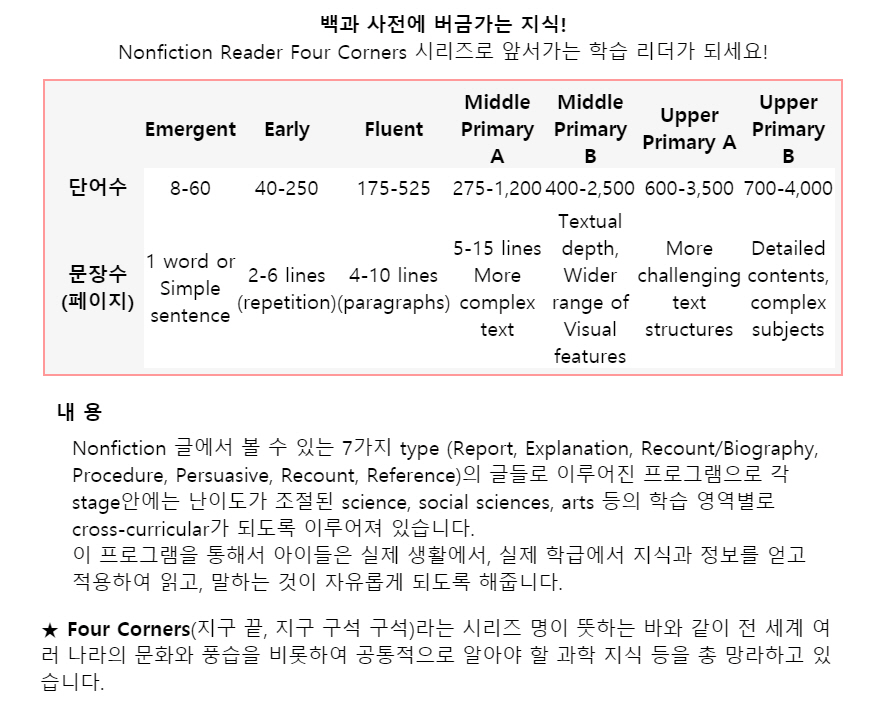

초등저학년 이제 자연과 세상에 대해서 호기심과 질문이 많아질 때에 누군가로 부터 들은 설명과 이야기는 매우 오래 기억이 되고 그들의 머릿속에 남아있게 됩니다. 그래서 이때에 지칭어휘의 의미와 정의를 머릿속에 잘 넣은 아이들은 이 표준을 잘 이해하고 다른 이들에게 그들이 배운대로 동일한 의미를 그의 언어로 설명할 수 있게 되지요.(유태인교육 https://youtu.be/XFFKr1XTygY )
그 이해와 적용을 충분히 훈련받지 못한 아이들은 무엇인지 알기는 아나 설명을 못해내는 불완전한 이해의 상태에 있습니다. 이바탕위에 또다른 지식이 쌓이고 아이는 반쯤 이해된 상태에서 다른 새로운 어휘와 정보를 쌓게 되기 떄문에 그위에 쌓인 스키마의 기능이 떨어질 수 밖에 없습니다. 아이가 몰입하여 스스로 읽는 다독의 힘 아이들을 변화시키는 것이지 엄마에 의해서 읽혀지는 책의 숫자는 어쩌면 방금 설명한 불완전한 이해속에 계속 부어 넣기만 하는 깨진 항아리에 물붓기가 아닐 수 없습니다.
아이캔에서는 초등저학년의 첫 넌픽션학습을 매우 중요하게 생각하고 여기에 많은 힘을 기울이고 있습니다. 이해하고 기억하고 설명할 수 있는 기초어휘위에 쌓인 지식이 그아이의 미래를 좌우합니다. 천천히 ,재미있게, 오감을 활용하여 수업해야 하는 이유입니다.

|